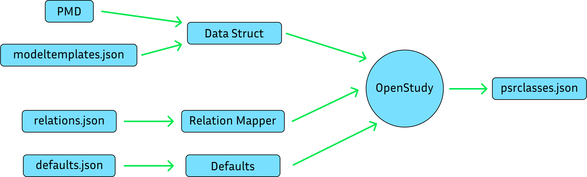

OpenStudy Files and Structs 101
When creating or loading a study using the OpenStudy framework, PSRI uses different files. This flowchart shows the order in which the files are used.
- The classes and their attributes are defined in a
PMDfile. - Then, a
Model Templatefile is used to map the classes to collections in the study. - Using the
Model Templateand thePMDfile, theData Structfile is created. - PSRI loads the
Data Struct,Relation MapperandDefaultsfiles into structs and create a study, whose data will be stored in a file namedpsrclasses.json.

How the structs are used
Creating an element
When creating an element from a collection, OpenStudy uses the Data Struct, Relation Mapper and Defaults files to check if:
- The collection is defined in the
Data Structfile. - The element has all the attributes defined in the
Data Structfile. - In the case where the element does not have all the attributes, the
Defaultsfile has the remaining ones.
Creating a relation
When creating a relation between two collections, OpenStudy uses the Relation Mapper to check if:
- The relation is defined in the
Relation Mapper - The elements exist in the study